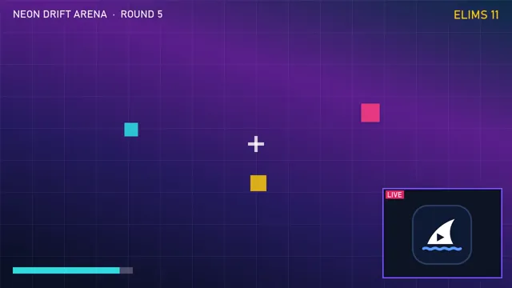

يعمل مع Kickومع Twitch وYouTube وأي ملف فيديو
يدخل بثك، وتخرج مقاطع جاهزة للنشر.
يجد SharkyClips أفضل اللحظات في تسجيل بثك ويحوّلها إلى مقاطع عمودية لـ YouTube Shorts وTikTok وInstagram Reels. كل شيء يعمل على حاسوبك.
- مجاني 100%
- بلا علامة مائية
- بلا حدود
- يعمل على جهازك
نتائج حقيقية
يعرض كل زوج لحظة من البث الطويل واللحظة نفسها في المقطع الذي صنعه SharkyClips منها بنفسه: مقصوصًا، بمقاس 9:16، مع ترجمة وعنوان.
 البث · 4:39
البث · 4:39 المقطع الجاهز
المقطع الجاهزOne grenade, triple kill! What did I see? 🤯اختير بسبب ردّ فعل عالٍ وانفجار في الدردشة (رسائل أكثر 14 مرة) وعبارة "what the hell". التقييم 93.  البث · 1:11
البث · 1:11 المقطع الجاهز
المقطع الجاهزOne versus three? I pulled off a CLUTCH! 😱عودة في مواجهة 1 ضد 3: صوت عالٍ ودردشة أسرع 12 مرة و"no way" و"clutch". التقييم 78.  البث · 5:28
البث · 5:28 المقطع الجاهز
المقطع الجاهزDid that last throw really just win the game?لحظة الفوز: صمت قصير ثم صراخ و"let's go". التقييم 85.  البث · 0:21
البث · 0:21 المقطع الجاهز
المقطع الجاهزDid you really see that double elimination happen?إقصاء مزدوج: "oh my god" وردّ فعل عالٍ ودردشة أسرع 11 مرة. التقييم 82.  البث · 2:53
البث · 2:53 المقطع الجاهز
المقطع الجاهزZero armor, reckless run, barely alive! 😱هروب مذعور من الزعيم. الشتيمة مصفّرة ومخفية في الترجمة. التقييم 64. 
البث · 3:51 المقطع الجاهز
المقطع الجاهزPracticed all week, then finally landed itقفزة تدرّب عليها طوال الأسبوع: "yes!" و"LETS GOOO" في الدردشة. التقييم 75.
صُنع من بث العرض التوضيحي الخاص بنا (لعبة مرسومة وصوت حاسوبي ودردشة مولّدة)، لذا لا يظهر أي شخص أو لعبة أو قناة حقيقية. لم يُعدَّل شيء يدويًا.
كيف يعمل
ثلاث خطوات. ويتولى SharkyClips المونتاج بينها.
أضف بثك
اسحب ملف فيديو أو الصق رابطًا من Twitch أو YouTube أو Kick. ويمكن لـ SharkyClips أيضًا أخذ أحدث تسجيل من مجلد OBS.
يصنع SharkyClips المقاطع
يجد اللحظات الصاخبة والمضحكة والمثيرة، ويقصّها بدقة، ويضيف الترجمة، ويحجب الشتائم بصفارة، ويكتب العناوين.
راجع وشارك
شاهد المقاطع، وغيّر ما تريد، وشاركها على YouTube Shorts وTikTok وInstagram Reels.


صُنع لصنّاع البث
يجد اللحظات
تتحول ردود الفعل العالية والضحك وانفجارات الدردشة وأحداث اللعبة إلى قائمة مقاطع مرتبة.
صفارات، مع تحقق
تُحجب الشتائم بصفارة في 11 لغة، ويُستمع إلى كل مقطع جاهز مرة أخرى.
زر مشاركة واحد
YouTube Shorts وTikTok وInstagram Reels، مع النص والحدود المناسبة لكل منها.
مساعد TikTokجديد
إضافة متصفح صغيرة لـ Edge وChrome وOpera وBrave تملأ صفحة رفعك على TikTok. أنت تراجع وتضغط نشر بنفسك.
عرض صورجديد
حوّل من 2 إلى 20 صورة إلى فيديو عمودي قبل وبعد مع تسميات وموسيقى.
السمات والألوانجديد
أربع سمات لونية للتطبيق (كلاسيكي، المحيط، Shark Sign، تباين عالٍ)، داكنة أو فاتحة، ولون التمييز الخاص بك.
مقارنة SharkyClips
معلومات من الموقع الرسمي لكل منتج، تم التحقق منها في 28 نوفمبر 2026. الأسعار بالدولار الأمريكي دون ضرائب. الخطط تتغير، فراجع صفحاتهم قبل أن تقرر.
| الميزة | SharkyClips | Eklipse | OpusClip | StreamLadder |
|---|---|---|---|---|
| السعر | مجاني (مفتوح المصدر، رخصة MIT) | تجربة مجانية؛ Premium من 24.99 $ شهريًا أو 179.99 $ سنويًا | خطة مجانية؛ الخطط المدفوعة من 15 $ شهريًا | خطة مجانية؛ الخطط المدفوعة من 15 $ شهريًا أو 150 $ سنويًا |
| العلامة المائية | أبدًا | على عمليات التصدير المجانية | في الخطة المجانية | فقط إذا استخدم مقطع مجاني ميزات مدفوعة |
| حدود المقاطع | لا توجد | مجانًا: معاينة مقاطع بث حديث؛ Premium: تقطيع بالذكاء الاصطناعي بلا حدود | مجانًا: 60 دقيقة معالجة شهريًا، والملفات تُحفظ 3 أيام | لا حدود للدقائق؛ تقطيع البث كاملًا بالذكاء الاصطناعي من خطة Creator (27 $ شهريًا)؛ التصدير المجاني بدقة 720p |
| أين يُعالَج الفيديو | على جهازك: لا يُرفع شيء | عبر الإنترنت: التحرير بالذكاء الاصطناعي يعمل في السحابة | عبر الإنترنت: ترفع ملفًا أو تلصق رابطًا | عبر الإنترنت: ترفع ملفًا أو تلصق رابطًا |
| ما تحتاجه | جهاز بنظام Windows 10 أو 11 وذاكرة 8 جيجابايت (macOS: اختبار أقل) | متصفح وحساب | متصفح وحساب | متصفح وحساب |
| التعرّف حسب اللعبة | يقرأ شاشة اللعبة في Delta Force وLeague of Legends؛ والألعاب الأخرى عبر الصوت والكلام والدردشة | أكثر من 3000 لعبة، مضبوط لكل فئة ألعاب | غير مذكور | غير مذكور |
| Kick | فيديوهات Kick مع الدردشة | يستورد بث Kick | يدعم روابط Kick | مقاطع Kick في الخطة المجانية؛ بث Kick كاملًا من خطة Creator |
| تصفير الشتائم | تلقائي بـ 11 لغة، ويُفحص كل مقطع مرة أخرى | غير مذكور | من خطة Pro (29 $ شهريًا) | رقابة تلقائية على الكلمات (الخطة غير مذكورة بوضوح) |
| اللغات | 11 (التطبيق والتعرّف على الكلام والترجمة) | غير مذكور للترجمة؛ الأوامر الصوتية بالإنجليزية | أكثر من 25 للترجمة | أكثر من 90 للترجمة |
"غير مذكور" يعني أننا لم نجده في صفحاتهم الرسمية. هل هناك خطأ أو معلومة قديمة؟ أخبرنا عبر صفحة التواصل وسنصححها.
المصادر (14 صفحة رسمية)
- eklipse.gg
- eklipse.gg/help/how-much-does-eklipse-premium-cost
- eklipse.gg/help/what-are-the-main-differences-between-the-free-and-premium-plans
- eklipse.gg/help/will-my-exported-video-have-a-watermark
- eklipse.gg/help/import-kick-streams-to-eklipse
- eklipse.gg/features/ai-edit
- opus.pro/pricing
- help.opus.pro/docs/article/plans-and-credits.md
- help.opus.pro/docs/article/video-sources-supported.md
- help.opus.pro/docs/article/video-languages-supported.md
- streamladder.com/pricing
- streamladder.com/clipgpt/import-from-kick
- streamladder.com/clip-editor/word-censoring
- streamladder.com/clip-editor/captions
كيف يستخدم SharkyClips يوتيوب
ربط YouTube اختياري. إذا ربطته، يستخدم SharkyClips خدمات YouTube API الرسمية فقط لرفع المقاطع التي تختارها وإدارتها وعرض نتائجها لك. تبقى بيانات YouTube الخاصة بك على جهازك.
عرض الأذونات وكيفية استخدام بيانات YouTube الخاصة بك
الرفع إلى يوتيوب اختياري. إذا ربطت قناتك من الإعدادات ← YouTube، يستخدم SharkyClips خدمات YouTube API الرسمية لهذه الأمور بالضبط، وفقط عندما تطلب ذلك:
| الإجراء | الإذن (النطاق) | متى |
|---|---|---|
| رفع مقطع جهّزته (العنوان، الوصف، الوسوم، الخصوصية، وقت النشر، قائمة التشغيل، الصورة المصغّرة)؛ تغيير بياناته أو وقته، أو نشره مبكرًا، أو حذفه إذا ألغيته قبل أن يصبح عامًا؛ إظهار القناة المرتبطة؛ قراءة المشاهدات والإعجابات وحالة الخصوصية للفيديوهات المرفوعة عبر SharkyClips | youtube | عندما تضغط انشر الآن أو تجدول مقطعًا (يُرفع مسبقًا ما دام حاسوبك يعمل)، أو تعدّله أو تلغيه في المكتبة، أو تفتح الإعدادات، وكل 6 ساعات تقريبًا أثناء عمل التطبيق |
| قراءة متوسط نسبة المشاهدة للفيديوهات نفسها، لمعرفة أي أسلوب افتتاح (خطّاف) يُبقي المشاهدين | yt-analytics.readonly | فقط للمقاطع المرفوعة ضمن اختبار الخطّافات، بعد 48 ساعة من نشرها للعامة |
تُخزَّن هذه البيانات على حاسوبك فقط، وتُستخدم فقط لعرض نتائجك وتحسين تقييمات المقاطع لقناتك أنت. لا يملك SharkyClips خادمًا: المطوّرون لا يتلقون بيانات يوتيوب الخاصة بك ولا يرونها ولا يشاركونها أبدًا، ولا يُستخدم شيء للإعلانات. لا يقرأ SharkyClips أبدًا قنوات الآخرين أو تعليقاتك أو مشتركيك أو سجل مشاهدتك. ولا يغيّر أو يحذف إلا الفيديوهات المرفوعة عبر SharkyClips، وفقط عندما تطلب ذلك (مثلًا عند تعديل مقطع مجدول أو إلغائه).
يمكنك قطع الاتصال في أي وقت من الإعدادات ← YouTube (وهذا يُلغي رمز الوصول لدى Google)، أو إزالة الوصول من أذونات حسابك في Google. بالربط توافق على بنود خدمة YouTube؛ وتعالج Google بياناتك وفق سياسة خصوصية Google. اقرأ سياسة الخصوصية وشروط الاستخدام الكاملة.
مجاني ومفتوح وخاص
SharkyClips مرخّص بترخيص MIT: بلا اشتراك ولا رصيد ولا علامة مائية. لا حساب ولا تتبّع، وتبقى فيديوهاتك على حاسوبك ما لم تشاركها. الشيفرة وكل الإصدارات على GitHub.